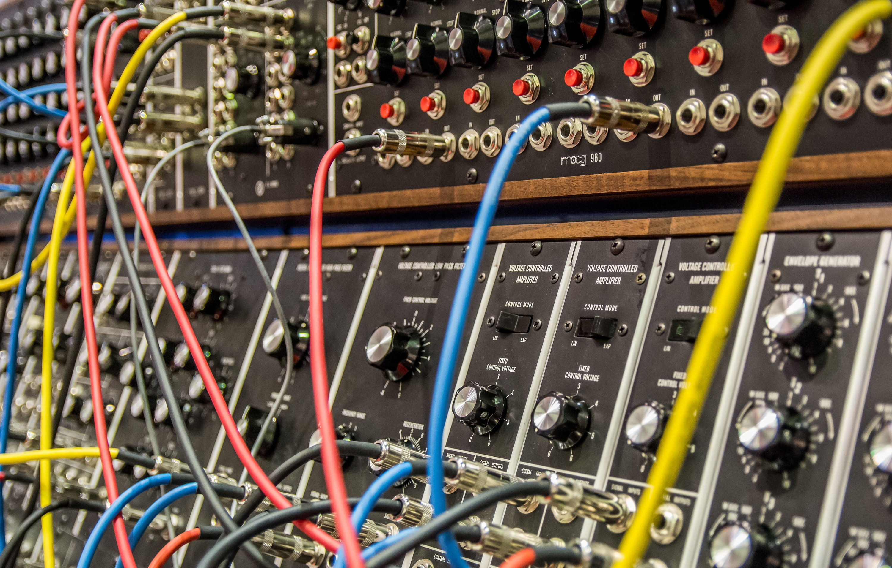

Computer Science and Engineering
Department of Computer Science and Engineering takes special efforts to impart learning ability for the students.......

Information Science and Engineering
The department has modern laboratories to serve the teaching and research needs of the students....

Electronics and Communication Engineering
This course aims to prepare students for developing their careers in the field of ECE.....

Electrical and Electronics Engineering
Electrical engineering is a field of engineering that deals with the study and application of electricity, electronics and electromagnetism..........

Civil Engineering
Civil engineers design major transportation projects. Civil engineers conceive, design,........
Aeronautical Engineering
Aeronautical Engineering is the science involved with the study, design,............

AI and ML
Ensure career success with Engineering Degree in Artificial Intelligence & Machine Learning.........